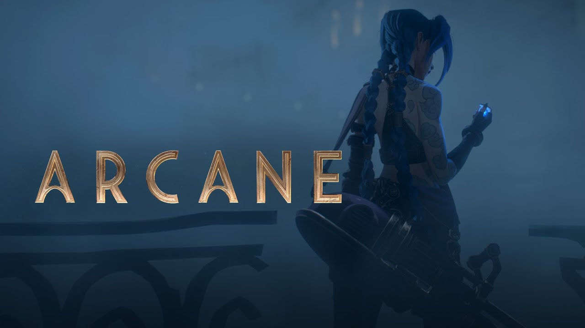

NOTÍCIAS
Arcane terá segunda temporada lançada em novembro de 2024 CONFIRMADO,"A Netflix anunciou que a segunda temporada de Arcane chega em novembro de 2024. A animação é uma adaptação do game League of Legends, narrando a história das irmãs Jinx e Vi, além de outros personagens do jogo que participam da trama, como Ekko, Caitlyn e Jayce. O primeiro ano de Arcane foi lançado em 2021 e contou com nove episódios no total. A trama foi concluída com um enorme gancho para continuação, após Jinx atacar os inimigos da cidade com um gigantesco foguete explosivo. A novidade da Netflix foi divulgada com um teaser trailer, sem tantos detalhes sobre a sequência."
DIRETORES
Foi criado por Christian Linke e Alex Yee e distribuída pela Netflix
LANÇAMENTO
O primeiro episódio foi lançado em 6 de novembro de 2021
